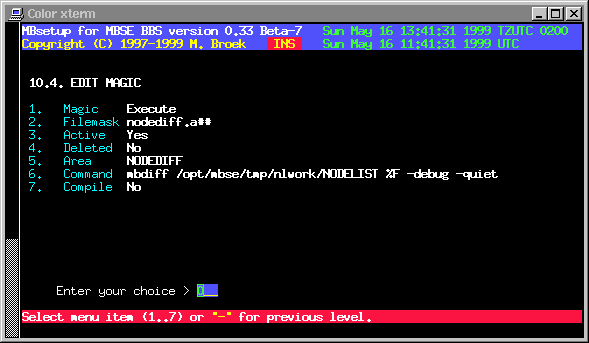

Last update 10-May-2002
MBSE BBS Setup - File Echo's Setup - Magics Files Setup.
Introduction.
Magics are special actions that you can perform on files received in a .tic area. The actions are: copy file to a directory, unpack file in a directory, set number of files to keep, move file to another .tic area, update magic request alias, adopt file into another area, store in another path, delete file (don't process it further) and execute a command. The edit screen is different for all kinds of actions you select. More than one magic record may exist for each area. With all these actions you can for example can setup processing of nodediff's and unpacking nodelists in the nodelist directory. If you use the execute command, you can only execute commands that are in the directory $MBSE_ROOT/bin, ie. /opt/mbse/bin.
Magics Setup.
Magic The action to perform, select with the spacebar.
Filemask The filemask to scan for. "?" Matches all characters,
"#" matches any digit and "@" any upper or lowercase letter.
Except for the "@" the test is case sensitive.
Active If this magic is active.
Deleted If this magic must be deleted.
Area The area in which this magic is found.
To path The destination path. (Copy, Other path and Unpack).
To area The destination area. (Adopt and Move).
Command The command to execute. (Execute).
Keep # The number of files to keep. (Keep).
Compile Trigger "compile nodelists". (Copy, Unpack and Execute).
Macro's
In the commandline for the magic execute command you may use macro's to replace parts of the commandline. The following macro's are defined:
%F Replaced by the full path and filename of the file. %P Replaced by the full path to the file. %N Replaced by the filename without dot and extension. %E Replaced by the extension of the filename. %L The last 2 characters of the filename extension. %D The day number of the year, 3 digits. %C The last 2 digits of the day number of the year. %A The .tic area name.

 Back to File Echo's Setup
Back to File Echo's Setup